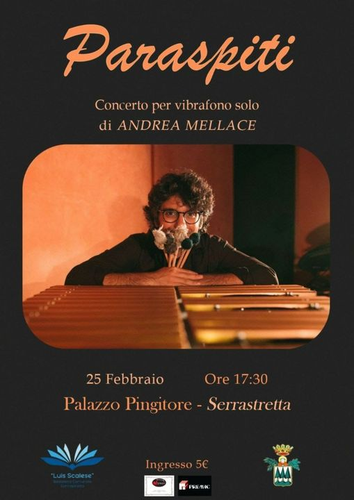
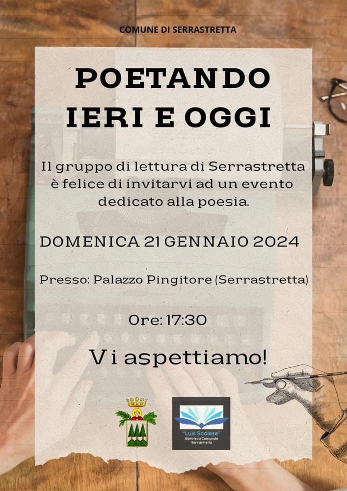

Auronomia Differenziata
Sabato 13 Aprile alle ore 17,00; Palazzo Pingitore, Serrastretta
Sabato 13 Aprile alle ore 17,00 a Palazzo Pingitore si terrà una importante iniziativa, l'argomento di cui si parlerà riguarda "L'autonomia Differenziata". Il relatore nella persona del Professore Angelo Falbo ci illustrerà i meccanismi del provvedimento e le ripercussioni che se attuato avrà, soprattutto per le regioni Meridionali. É importante che ogni singolo cittadino sia informato su tutto ciò che accade intorno a noi, l'invito quindi é rivolto a tutta la cittadinanza. Non mancate!
Aggiornato il: 11/04/2024

Primavera Classica
Domenica 11 Aprile ore 17,30, Palazzo Pingitore - Serrastretta
Manca ormai poco: domenica avremo il piacere di ospitare a Serrastretta il concerto di Mihaela Oggiano (violino) e Valentina Occhiuzzi (pianoforte). Vi aspettiamo a partire dalle 17! Ingresso: 5€
Aggiornato il: 11/04/2024
La donna, il dolore, il riscatto
Domenica 10 Marzo ore 16,30, Palazzo Pingitore - Serrastretta
In occasione della giornata internazionale della donna, un'iniziativa importante si terrà domenica a palazzo Pingitore. L'incontro mira a una sensibilizzazione civile riguardo al femminicido e fornire strumenti per poter arginare questo aberrante fenomeno che sta dilagando in maniera preoccupante. Non mancate vi aspettiamo.
Aggiornato il: 06/03/2024
Paraspiti
“PARASPITI” - Concerto per vibrafono solo di Andrea Mellace. Domenica 25 febbraio, ore 17:30. Palazzo Pingitore, Serrastretta. Ingresso: 5€
“Paraspiti” è un lavoro di ricerca musicale che si concretizza in un concerto per solo vibrafono in cui si esplora la ricchissima gamma timbrica di questo meraviglioso strumento, attraverso l'utilizzo di diverse tecniche, diverse bacchette e archetti, preparando lo strumento e sfruttando il suo vibrato meccanico. Inoltre, a fianco della ricerca timbrica e sonora, grande attenzione è posta al repertorio. L'assenza di una vasta letteratura musicale per vibrafono può esser vista come un'opportunità di scrittura ed elaborazione personale: ecco perciò che Paraspiti diventa un concerto in cui si alternano composizioni originali, rielaborazioni personali di noti temi del repertorio jazzistico, della popular music e della musica tratta dal mondo del cinema, estratti di musica classica e contemporanea. L'intento è infatti quello di trasportare il pubblico, attraverso un repertorio vario, piacevole e interessante, in un'esperienza di ascolto unica di questo affascinante strumento. Andrea Mellace Diplomato in strumenti a percussione con il massimo dei voti al conservatorio di Milano, si specializza in vibrafono e marimba, sia nel campo della musica jazz che in quello della musica contemporanea, con Andrea Dulbecco, tra i massimi esponenti di questi due strumenti in Italia.
Aggiornato il: 18/02/2024
Poetando Ieri e Oggi
Domenica 21 gennaio 2024, ore 17,30 Palazzo Pingitore - Serrastretta
Il gruppo di lettura di Serrastretta è lieta di invitarvi ad un evento dedicato alla poesia.
Nell'anno appena passato e in parte in questo nuovo, i nostri paesi sono stati inondati da tante bellissime e interessanti iniziative da parte di associazioni e gruppi presenti nel territorio. Ciò ha permesso di coltivare, insieme, tanti interessi in ambiti diversi e di accrescere e dare valore al propio arricchimento personale.
Il gruppo di lettura vi propone un ulteriore iniziativa per continuare nel percorso dello stare insieme in maniera piacevole e nello stesso tempo accrescendo le nostre conoscenze culturali. L'iniziativa consiste nella lettura di opere di Poeti Serrastrettesi or non più viventi , e di tanti che si dilettano attraverso versi e poesie a esteriorizzare emozioni e sentimenti.
Vi aspettiamo quindi numerosi!

ÀRBURU AMÍCU di Alessandro Sessa - PRESENTAZIONE - SPETTACOLO
Domenica 14 gennaio, ore 17,30 Palazzo Pingitore - Serrastretta
C'è una dimensione in cui troviamo protezione e dimora: è lo spazio sospeso del sogno, il luogo in cui le paure si dissolvono e vecchi scenari confortano.
"Árburu amícu" dell'autore sanlucidano Alessandro Sessa è un viaggio che avvolge i sensi: l'odore del mosto, il rumore del vento, la dolcezza dei fichi, lo sguardo proteso al mare e alle distese verdeggianti.
Un mondo in cui magia e religione precedono il rigore della scienza, nel tentativo assennato di dare un significato a ciò che appare sconosciuto e inaccettabile, sottrarlo alla casualità ed inserirlo in un orizzonte di senso; una risposta adattiva, una tensione collettiva che ricorre ai riti per trovare ragione, dare un valore umano a ciò che sfugge al calcolo.
Lo sguardo non è nostalgico, né ancorato al presente per pretesa egemonia dell'attualità, ma proteso al futuro, alla previsione di un intreccio tra la vocazione coscienziale della tradizione e le possibilità della modernità.
Aggiornato il: 07/01/2024